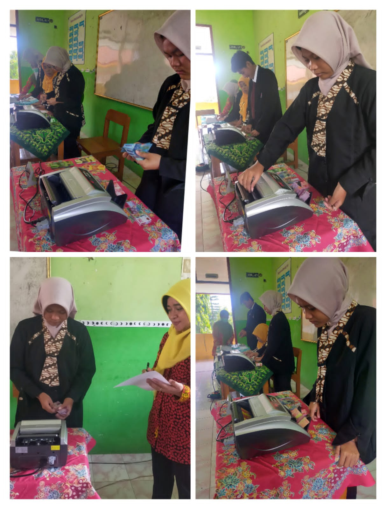

Jurusan Akuntansi terdiri dari pembelajaran manual dan akuntansi komputer (MYOB), dengan mempelajari pelajaran akuntansi siswa dapat mengembangkan pengetahuan dalam dunia akuntansi dan membuat buku keuangan untuk perusahaan jasa, perusahaan dagang, dan perusahaan manufaktur.

<\video>